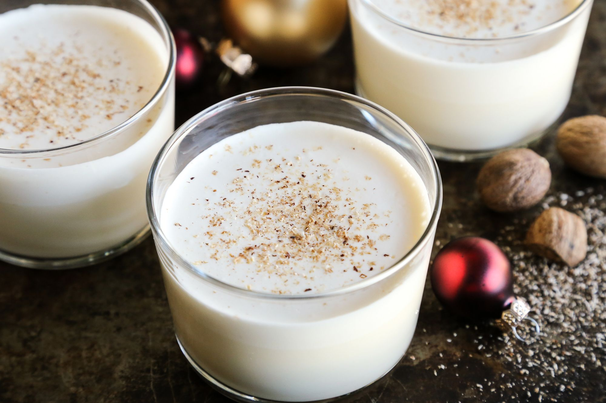

Charles Mingus’ Christmas Eggnog

This recipe was shamelessly stolen from the official Charles Mingnus website.
Charles Mingus never played something the same way twice. He probably never made eggnog the exact same way twice either. This recipe demands improvisation. Have fun with this one, but tread lightly - that 151 can sneak up on you. Don't get salmonella.
Ingredients
- 1 egg per person (fresh makes a difference)
- 2 sugar cubes per egg
- one shot of 151 proof Jamaican rum per person
- one shot of brandy (or Bourbon) per person
- some milk (amount not specified)
- cream (amount not specified)
- vanilla ice cream
- fresh nutmeg – lots (I like to grind my own)
Steps
- Separate one egg for one person. Each person gets an egg.
- Two sugars for each egg, each person.
- One shot of rum, one shot of brandy per person.
- Put all the yolks into one big pan, with some milk.
- That’s where the 151 proof rum goes. Put it in gradually or it’ll burn the eggs,
- OK. The whites are separate and the cream is separate.
- In another pot– depending on how many people– put in one shot of each, rum and brandy. (This is after you whip your whites and your cream.)
- Pour it over the top of the milk and yolks.
- One teaspoon of sugar. Brandy and rum.
- Actually you mix it all together.
- Yes, a lot of nutmeg. Fresh nutmeg. And stir it up.
- You don’t need ice cream unless you’ve got people coming and you need to keep it cold. Vanilla ice cream. You can use eggnog. I use vanilla ice cream.
- Right, taste for flavor. Bourbon? I use Jamaica Rum in there. Jamaican Rums. Or I’ll put rye in it. Scotch. It depends.
"See, it depends on how drunk I get while I’m tasting it." – Charles Mingus
Back